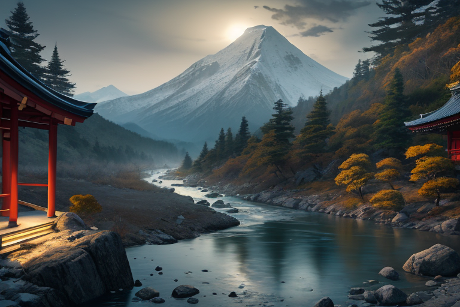
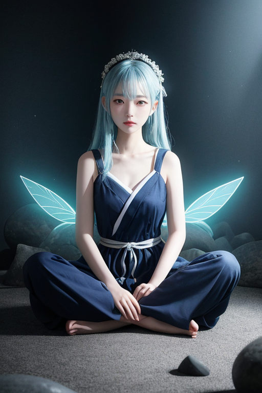
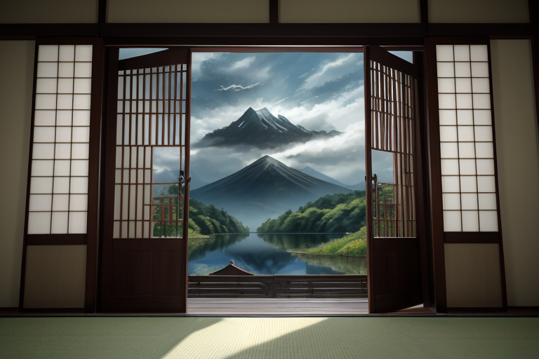
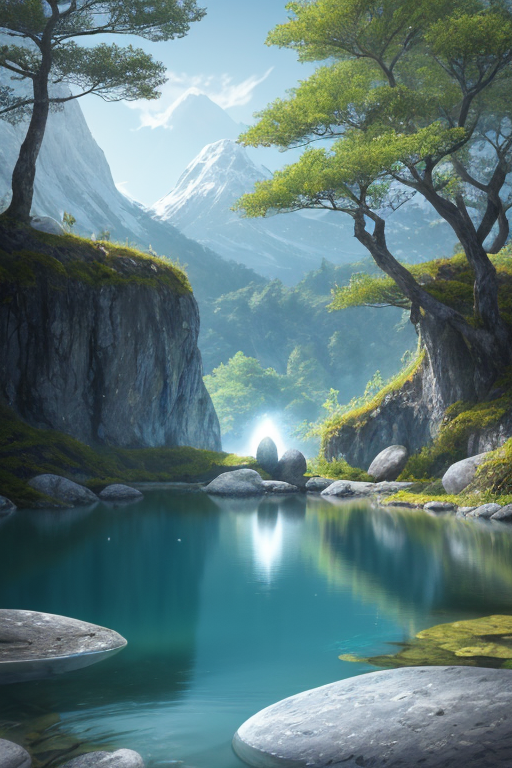
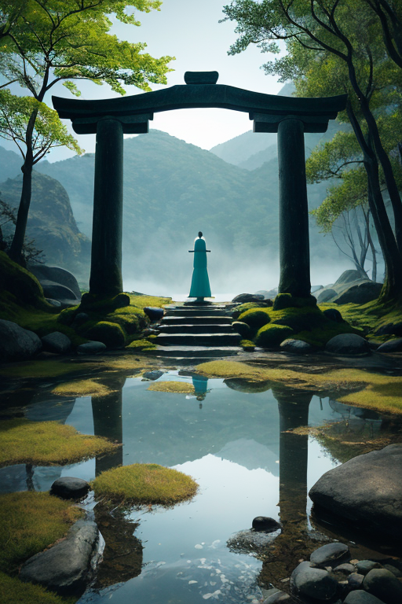

第一章 現実の長野
あなたはまだ気づいていない。この土地にも、王がいることを。
上高地の梓川は、穏やかな水音を立てて流れていた。穂高連峰の雪解け水は、夏の日差しを受けても冷たく、その流れは周囲の静寂を増幅させる。観光客のざわめきは、この川のほとりでは不思議と遠く、自分自身の呼吸と足音だけが際立つ。善光寺の本堂の闇は深く、無数の祈りが染み込んだ柱と板の間を、一筋の線香の煙がゆっくりと昇っていく。ここでは、誰もが己の内側に沈黙する。
長野は、歪みの列島にあって、内側へと沈み込むような土地だ。日本アルプスという巨大な壁が東西を隔て、その間に広がる盆地は、外の喧騒を遮断する。しかし、その静けさは完全な平穏ではない。地下には複雑な断層が走り、時折、大地は内側に蓄えた軋みを吐き出す。王はここにいる。歪みを微調整し、巨大な力の奔流を、かすかに、ほんのわずかに和らげるために。彼の名は、ナガノリア・セルフ。高地と内省の王だ。彼は今、静かなる封じ込めの中にあった。

第二章「歪みの兆候」
松本城の天守閣から、王は盆地を見下ろしていた。漆黒の壁が静寂を抱きしめるように立つその城は、歪みの調整に必要な結界の要だった。しかし今日、指先に伝わる精神波に、かすかな乱れを感じる。それは、地下を走る糸魚川-静岡構造線断層の、あまりに深いところで生じた微かな軋みではない。結界そのものの、内側からの揺らぎだ。
「セルフィア」
「はい、王」
傍らに現れた主席妖精の声は、いつもより低く、緊張を含んでいた。
「封じたものが、目覚めようとしている」
「……はい。アルペナも、高原の風に、以前にはなかった『熱』を感じると申しております」
善光寺の鐘の音が、夕暮れの長野市街からかすかに聞こえる。衆生を等しく救うというその信仰の祈りは、結界を補強する重要な要素だ。しかし、王自身の内側で、何かが蠢く。この土地が彼に与えたもの――「感情」という名の歪みが、完璧な調整の精度を、ほんの少し曇らせ始めていた。自分と向き合うとは、この内なる雑音をも包含することなのか。彼は無表情のまま、目を閉じた。

第三章「王の葛藤」
松本城の天守から北アルプスを望む。かつて武田と上杉が覇を競った川中島の地は、今、別の均衡を求めていた。王、ナガノリア・セルフの内面は、静謐を装った戦場だった。妖精セルフィアの精神波は、彼の思考を透明な湖面のように保とうとするが、湖底では「感情」という名の熱水が湧き上がる。封印を維持するか。この内なる圧力を、己の制御下に置くために解放するか。
「王よ、その『熱』は危険です」セルフィアの声は風のように冷たい。「この土地の歪みは、王の無感情性を前提に調整されています」
王は黙ったまま、指先で虚空を撫でる。高原を渡る風に、ほのかな味噌の香りが混じる。人々の営みが積み重なった、複雑で豊かな匂いだ。それを「感じる」自分がいる。善光寺の祈りが結界を支えるように、この感情もまた、何かを支える礎にはならないか。自分と向き合うとは、この危うい可能性をも見据えることなのか。彼は、揺れる己の内側という、最も身近な歪みの調整に、静かなる逡巡を抱えていた。

第四章 妖精との対話
上高地の梓川のせせらぎは、千年変わらぬリズムを刻んでいた。セルフィアはその畔に立ち、透明な指で水面を撫でた。波紋は、歪みのない完璧な円を描く。
「この高地は、歪みを封じるための場所でした」彼女の声は風に溶ける。「かつて、激しい地殻の動きがこの地を揺るがした。王は、そのエネルギーを『内側』へと封じ込め、外へ暴発せぬよう、自らの内面に沈殿させた。それが『高地封』です」
アルペナがそっと続けた。「封じたのは力だけではありません。感情の萌芽も、その一部でした。王が感情を持つことは、調整の精度を乱す危険因子。…そう考えられていたのです」
セルフィアは王を見つめる。「あなたが今感じている迷いや逡巡。それは封じられたものが、そっと息を吹き返し始めた証です。自分と向き合うという問いは、この封印された内面の湖の、深く静かな水底を見つめることに他なりません。そこに何が沈んでいるのか。あなたは、ご覧になりますか？」
王は、自らの胸の内に、確かに広がる深く静かな湖面を思い浮かべた。その水は、あまりに透き通り、底が見えない。

第五章 微調整と余韻
王は、静かに目を閉じた。胸の内に広がる湖の水底は、やはり見えなかった。だが、見ようとする意志そのものが、微かな波紋を立てた。その波紋が、諏訪大社の御神体である守屋山の古い岩盤に、そっと触れる。封印の亀裂は、彼の内省という行為によって、かすかに共振していた。
「修復は、『塞ぐ』ことではありません」セルフィアの声が風に乗る。「あなたがその存在を認め、向き合うこと。それ自体が、最も繊細な調整なのです」
王は、歪みの微調整を開始した。力で押さえつけるのではなく、自らの内なる湖の水を、そっと注いでいく。軽井沢の森を揺らす風の音一つ、善光寺の参道に落ちる影の長さ一つ。彼は、自分という存在を通して、世界の些細な均衡を整えた。代償は、彼がこれまで以上に「感情」という波を感じることだった。喜びも、寂しさも、迷いも、すべてが湖面を揺らす。
調整は完了した。高地は静寂を取り戻す。だが、王の胸の内の湖は、以前より深く、そして微かに温かくなっていた。底は見えぬまま。それでいい。向き合うとは、見えることではなく、その存在を水底に沈めたまま、抱き続けることなのだから。
あなたの町にも、王がいる。